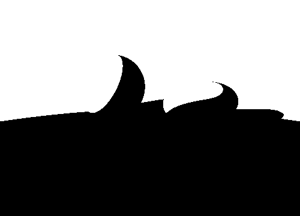
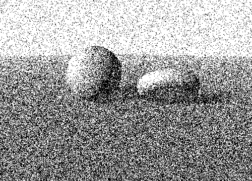
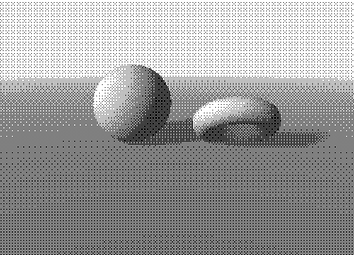
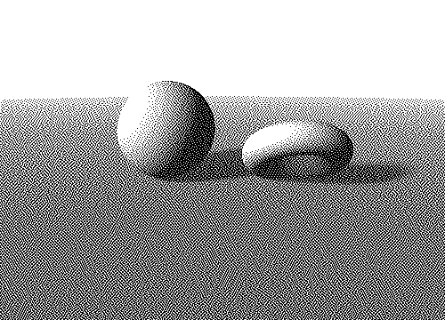
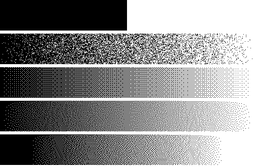
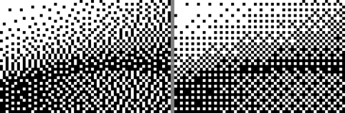
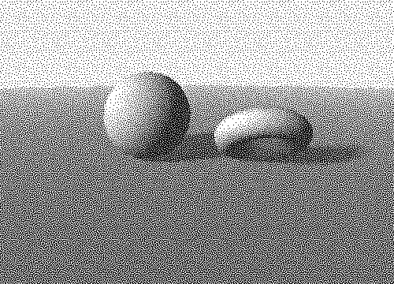
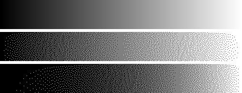
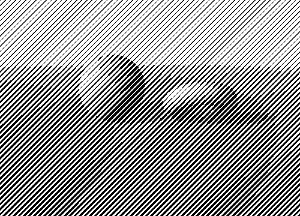
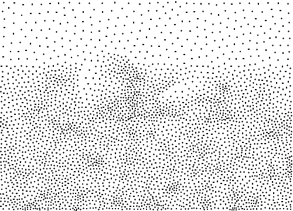

Chapter 1 of the course. One layer only: tone. How dark is this spot, and how to say it with ink or no ink.
Engraving, letterpress, laser printer, 1-bit screen (early Mac, e-ink), pen plotter: each pixel is black or white. No grey exists physically. Every grey is optical: the eye averages over a small area. Low-pass filter. Step back from a newspaper and the dots disappear.
Rule of the game: mean ink coverage over a neighbourhood = target grey. Everything below is a way to place the marks.
Tone check. Blur the binary result (gaussian, radius ≈ pattern size) and compare to the target. If the blur looks like the original, the tone is right. If not, the method (or the gamma) is wrong. Used below.
out = in > 0.5. The only grey left is the edge
between two regions. Good for line art, terrible for volumes:
sphere and torus vanish into the ground. Information is lost,
not displaced.
Round to n grey levels (posterization). Fine with n = 256, ugly with n = 4: banding, contour lines at the steps. The error is simply dropped, and it is visible because it is correlated with the image. Same issue with 1 bit, only worse.

Idea of everything that follows: keep the error, or decorrelate it from the image, so that the eye averages it out.
Overview: Wikipedia, Dither; Tanner Helland, eleven dithering algorithms (code); Surma, Ditherpunk (best readable intro, with gamma); Lucas Pope, Obra Dinn devlog on dithering (1-bit 3D game).
Compare each pixel to a random number. Grey is right on average, but noise is white: clumps and holes at all scales. Grainy. Seldom used alone, but it is the baseline.
Compare to a fixed threshold matrix tiled over the image. Bayer matrices (1973) are built recursively (2×2, 4×4, 8×8…), thresholds spread so that each grey level adds one pixel far from the previous ones (dispersed dot). Fast, parallel, stable between frames (no flicker in animation). Visible cross-hatch pattern. Bayer, An optimum method for two-level rendition of continuous-tone pictures, IEEE ICC 1973. See Ordered dithering.
If the matrix instead grows a cluster around the centre (clustered dot) you get a halftone screen, see below.
Go pixel by pixel, output 0 or 1, then push the error (wanted − printed) onto the neighbours not yet visited. Mean grey is conserved by construction.
Serpentine scanning: go left to right on even rows, right to left on odd rows (mirror the kernel). Removes the diagonal drift. Artefacts remain: worms (connected lines of dots) near black and white, and regular patterns at exact fractions (1/2, 1/3). A random tweak on the threshold helps, at the price of grain.





What the eye likes: dots irregular (no pattern) but evenly spread (no clumps). Spectrum: energy at high frequencies only, nothing at low frequency. Called blue noise (Ulichney). Error diffusion approximates it; better, build a blue-noise threshold mask once and use it like a Bayer matrix: ordered dither speed, error-diffusion look. Void-and-cluster: Ulichney, SPIE 1993, doi:10.1117/12.152707. Book: Digital Halftoning, MIT Press 1987. Wikipedia. The mask below is a 64×64 tile made by the greedy « always fill the biggest void » rule, a simplified void-and-cluster.

Pixel values in an image file are sRGB, not proportional to light. 50% grey (value 128) emits about 21% of the white's light. A 1-bit pattern with 50% white pixels emits 50% of the light, so looks lighter than 128. Rules: convert to linear before dithering (error diffusion or ordered), and dither a target of « fraction of light ». Else mid-tones come out too light. See Surma, Ditherpunk, and sRGB.
In the demos of this page I dither the values as they are, lazily. The scene looks a bit light. Ramp below does it both ways.

Check by viewing at 100%. A browser that rescales the image mixes the pixels and spoils the test.
Halftone, as in newspaper and offset printing: a regular grid (screen) of dots at 45° whose size varies. Dark = big dot, light = small dot. This is AM screening (amplitude modulated: size changes, spacing fixed). Opposite: FM screening (frequency modulated: fixed dot, varying density), which is what dithering and stippling do. In ordered-dither terms: AM = clustered-dot matrix, FM = dispersed-dot matrix.
Why clustered? A press cannot print a lone tiny dot reliably, big clusters are robust. Cost: low resolution (the screen frequency, 85 lpi in a newspaper, 150 lpi in a book).
Replace dots by lines and you get the line screen: parallel lines, width = darkness. Same tone model as engraving. This is the bridge to hatching: let the line follow the form instead of a fixed 45°.

Dots only, all the same size, density = darkness. The hand version is slow but old: stipple engraving (Giulio Campagnola, c. 1510), then scientific illustration, where dots do not hide the edge of a specimen the way hatching does. Wikipedia: Stippling.
Algorithm: weighted Voronoi stippling, Secord, Weighted Voronoi Stippling, NPAR 2002 (page). Start with random points, more where it is dark. Compute the Voronoi cell of each dot, with image darkness as density. Move each dot to the centroid of its cell (weighted). Repeat: this is Lloyd relaxation. Dots spread evenly (blue-noise look) but dense where dark, with no grid at all. Output is a list of points: good for a pen plotter. Without scipy, the cells are computed per pixel (nearest dot).

Grey = ink coverage = (number of marks) × (area of a mark) / area. Two knobs: more marks, or bigger marks. Dithering fixes the size and varies the number, halftone the contrary, hatching varies both (spacing and width).
Next: 2. Hatching & engraving, tone from lines that follow the surface.